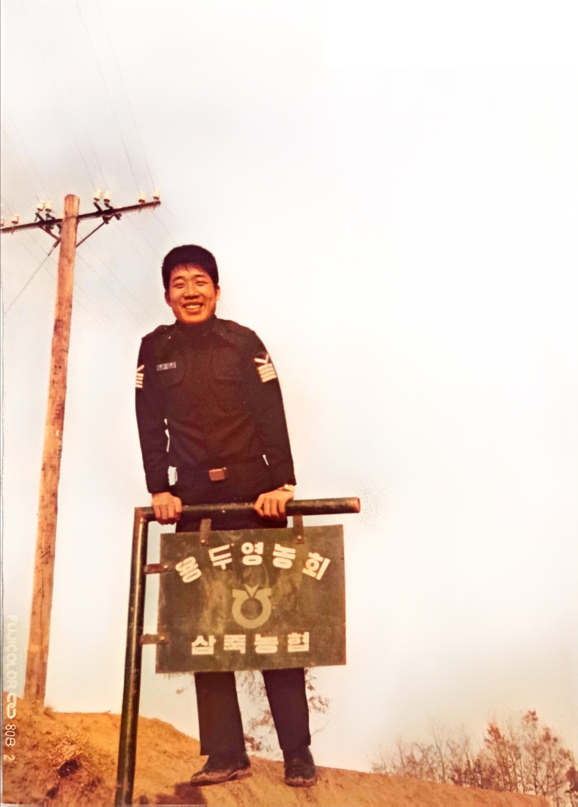

나의 아버지는 농부이다. 나는 농부의 자식이다. 우리집은 논농사와 밭농사를 지었다. 논은 등너머에 5 마지기, 밭은 조심히에 1000평 정도 있었다. 집 앞에 텃밭 200평도 있었고, 집 앞 행길 너머에도 50평 정도 있었다. 산은 없었다. 그런데, 이 모든 땅들이 우리 땅은 아니다. 남의 땅이다. 남의 땅을 빌려 농사를 짓는 소작농이다. 아버님은 경기도 이죽면 장능리 하장에서 태어나셨고, 죽산 초등학교를 다니셨다. 6.25 전쟁에 참여하여 군 생활을 하다가 특무 상사로 제대 후, 서울에서 잠깐 직장 생활을 하셨다. 서울에서 어머님을 만나 결혼하고 다시 시골에 내려와 정착했다. 삼죽면 용머리 형님네 집에 잠깐 문간방 생활을 하다가 용머리 주막거리에 기와집을 짓고 독립했다. 내가 이 집에서 태어났다. 형과 누나는 그 전 집에서 태어났고, 나와 두 동생들은 새 기와집에서 태어나 1980년초 행길 확장으로 집을 허물고 내장리 하장 진살미 옆 골말로 이사를 갈 때까지 이 집에서 살았다.
등너머 논에는 살을 심었다. 예전부터 경기도는 아끼바리 쌀(추정미) 또는 풍광을 많이 심었다. 아끼바리 살은 쌀이 기름지고 맛이 좋아 대부분 많이 심었다. 70년대에는 벼가 많이 열리는 개량종인 유신벼, 통일벼를 잠깐 심었다. 이 쌀들은 벼를 베거나 부딪히기만 해도 벼가 떨어졌다. 쌀이 많이 떨어져도 수확량은 이전 아끼바리보다도 많았다. 그런데, 쌀 맛이 좀 별로 였다. 못살때는 쌀 수확량이 중요했지만, 어느 정도 굶지 않는 시기가 되자, 다시 아끼바리로 돌아갔다.
쌀 농사는 못자리 만들기부터 시작된다. 모판에 볍씨를 숙성하여 뿌린 다음 논에 깔고 물을 대면 싹이 나온다. 어느 정도 자라면 논에 가져다 심는데, 우리는 논이 많지 않아 못자리를 직접 하지 않고 모를 어디서 사와서 심은 것 같다. 논을 갈고 물을 대서 논 바닦을 잘 고른 다음에 모 줄을 논 양 끝에 박는다. 모 줄은 가는 줄 중간중간에 빨간 띠가 붙어 있으서 이 곳이 있는 지점에 모른 심게 하는 표시가 있다. 한 줄을 다 심으면 논 양 끝에 모 줄을 대는 아이가 다음칸으로 줄을 옮기기도 하고, 끝에서 심는 사람이 직접 줄을 옮기기도 한다. 일단 줄을 세우면, 논 중간에 있는 사람들이 왼손에는 모를 잡고, 오른손으로 모를 조금씩 빼서 논 땅에 심는다. 손가락으로 모를 잘 잡은 다음에 땅을 찔러 모를 넣고 손을 빼면 모가 심어지는 것이다. 이때 가장 중요한 기술은 왼손에서 일정양의 모를 분리하여 오른손으로 보내주는 작업이다. 이 속도가 빠르면 모를 빨리 심을 수 있고, 이 속도가 느리면 모를 심는 속도가 느려진다. 나는 왼손 기술이 좋이 이 작업을 빨리 했는데, 고등학교 때 외부 일손 도우러 모를 심으러 나간 적이 있었는데, 내 솜씨가 너무 빨라 경상도에서 농사깨나 지었다는 친구가 감탄을 했던 기억이 있었다. 그 친구보다는 액 1.5에서 2배 정도의 속도로 모를 심었고, 일반 도시 출신 애들보다는 서너배 이상 빨랐다.
모심기는 철저한 분업이다. 논 가운데에서 3~4 밑 간격으로 나란히 서서 자기 주변의 모를 심는다. 모를 심는 사람들에게 모를 공급하기 위해 사람들의 뒷자리에 모를 던지는 사람이 필요하고, 한줄 다 심으면 양 끝에서 줄을 옮기는 사람이 필요하고, 밖에서 논으로 모를 옮기는 사람이 필요하다. 논 앞에서 전체적으로 심는 과정을 저아하는 대장이 필요하고, 힘이 나도록 농악을 해주는 사람도 때로 필요하고, 밥이나 술, 간식, 물을 나르는 아낙네도 필요하고, 밥을 짓고 물을 깃는 여인들도 필요하다. 대장은 적절히 모를 심는 속도를 제어한다. 한줄 다 심으면 다음 줄로 옮기라고 말하고, 빨리 하가고 재촉하기도 하고, 가끔 허리피고 하자고 얘기하고, 모 공급을 빨리 해달라고 요구도 하고, 술한잔 먹고 쉬었다가 하자고 하기도 한다. 물론 모 심는 사람 중의 하나가 그 역할을 할 수도 있고, 논이 작은 경우 혼자 이 모든 것을 다 하는 경우도 있다. 요즘은 이양기 하나로 이 모든 것을 대체한다. 세상이 많이 바뀌었다.
논에 모를 심고 나면 쌀리 잘 열리고 여물게 하기위한 관리 작업이 필요하다. 제일 기본적인 것이 물대기이다. 물이 적절히 유지되야 벼가 잘 자란다. 물이 부족하면 논바닦이 갈라지고 벼가 말라 죽는다. 비가 오래 안 오면 시골에서는 그야말로 큰일이다. 저수니 물을 대거나, 펌프로 지하수를 퍼올려서 물을 대야 한다. 비기 너무 많이 와도 문제이다. 홍수가 나면 벼가 물에 잠기고 쓰러진다. 그러면 벼가 여물지도 못하기도 하고, 썩기도 하고, 병충해에도 약하진다. 벼속에 벼와 비슷한 피나무가 자라는 경우에 벼가 영양분을 못 섭취해 성장을 잘 못하고 벼도 잘 열리지 못한다. 벼가 자르는 동안에 피가 있는지를 벼고랑을 다니면서 잘 살펴서 뽑아내야 한다. 논바밖에 풀이 자라도 봅아주어야 한다. 이 풀들은 길게 바닦에 절쳐 자란다. 맨발로 바닦을 훑어 가다가 풀에 발이 걸리면 잡아서 뽑아주면 된다.
벼 깜부기병은 주로 벼 이삭에 발생하는 곰팡이병으로, 질소질 비료를 과다하게 사용하거나 가을철 작황이 좋을 때(풍년일 때) 많이 발생하여 '풍년병'이라고도 불린다고 한다. 발병하면 이삭이 검게 변하고 내부가 포자로 가득 차 수확량과 품질을 크게 떨어뜨린다. 이삭누륵변도 깜부기병과 비슷하게 검게 변하는데, 검게 변하기만 하면 깜부기병, 크기가 너덧배 커지면 이삭누룩병이다. 이런 병들은 병원균들에 의한 것이므로 논양을 줘서 걸리지 않도록 했다. 농약동을 등에 지고, 왼손으로 상하로 움직이면 오흔손의 호스끝에서 논냑이 뿌려진다. 이 기구는 혼자서 농약을 주는 방식인데, 시간이 많이 걸린다. 우리는 주로 큰 통에 물을 담고 여기에 농약을 푼 다음 형과 내가 펌프 기계를 상하로 펌프질하고, 아버지가 긴 호스로 논을 이동하며 농약을 주는 방식을 많이 했다. 어던때는 나와 동생이 펌프질을 하고, 형이 호스를 끌고 다니며 논에 농약을 주었다. 줄이 말리거나 엉킴없이 잘 되도록 막내 동생이 줄을 잡아주곤 했다. 농약을 줄 때는 마스크를 쓰고 해야 하는데, 그 당시에는 마스크 없이 그냥 했다. 가끔 농약을 주고 어지러움을 느끼는 경우가 종종 있었고, 신문이나 테레비에는 농약 중독으로 사람이 죽었다는 뉴스나 기사를 보곤 했다.
여름에 적당히 비가 오고, 가을에 맑은 하늘이 자주 보이면 그해는 풍년이다. 들이 황금색으로 변하면 동네 여기저기서 탈곡기 소리가 났다. 먼저 낫으로 벼를 베어야 한다. 나는 왼손잡이라 외낫을 써야 한다. 아버지도 왼손잡이셨다. 다른 형제들은 모두 오른손 잡이였다. 벼를 베는 것도 실력차이가 많았다. 주로 어른들이 벼를 베고, 애들은 뒤에서 벼를 묶었다. 그리고 묶은 벼를 논 바깥으로 날랐다. 그러면 리어카를 가지고 벼를 집으로 날랐다. 딸딸이(경운기)가 잇는 집은 경운기로 했다. 우리는 리어카로 날랐다. 일단 논에서 행길로 옮기는 작업은 지게를 이용하기도 하고 리터카를 이용하기도 했다. 오르막을 오를 때면 뒤에서 리어카를 밀어야 한다. 일단 행길에 접어들면 리어카가 쉽게 잘 나갔다. 문제는 행길에서 집까지 내리막길이 있다는 것이다. 이 내리막길에서는 리어카의 속도 제어가 어려웠다. 자꾸 빨라지는데, 그러면 뒤에서 너무 빨라지지 않게 잡아 당겼다. 그래도 힘이 부치면 리어카의 앞 부분을 들어 뒤부분이 행길에 닿도록 하여 마찰을 유도하여 리어카의 속도를 줄였다. 속도 제어가 안되면 나머 빠른 속도가 비찰을 내려와서 위험하다.
리어카에는 농작물뿐만 아니라 짐도 실었고 사람도 탓다. 평평한 길이나 내리막 길에서는 한사람만 앞에서 끌고 나머지는 뒤 짐칸에 탔다. 리어카의 바퀴는 두 개이고, 바퀴 윗 부분 쇠나 나무 부분에 걸터 앉았다. 끄는 사람이 일부러 앞에서 끄는 손잡이를 상하로 흔들면 리어카가 심하게 흔들렸다. 또 애들을 뒤에 실고 막 달리다가 손잡이를 바닦에 박으면 리어카가 앞으로 넘어가 뒤집힐 듯이 요동쳤다. 그래도 꿋꿋하게 떨어지지 않고 노래부르며 리어카 뒤에 계속 탓다. 이제 집으로 올긴 벼를 털어야 한다. 가을의 탈곡기 소리는 시골의 퓽년가였다. 마을의 이집 저집에서 앵앵~하고 탈곡기 소리가 울렸다. 일단 마당 끝에 경운기를 배치한다. 그리고 경운기 앞 부분 바닦에 멍석을 깔고 볍씨가 쌓이게 한다. 경운기 몸통에 지게 다리를 묶어 가마니를 씌워 벼가 날아가지 않게 한다. 탈곡기 양 옆에는 볏단을 쌓는다. 탈곡기 뒤에는 긴 나무를 대서 탈곡한 짚단을 묶기 편하게 쌓이도록 한다. 이제 건장한 두 사람이 탈곡기 바닦을 누르며 통을 돌린다. 탈곡기 통이 돌면서 통에 박혀 있는 굽은 굵은 철에 볍씨가 떨어지고 탈곡기 앞쪽으로 모아진다. 아버지는 고무래로 탈곡기 앞에 쌓인 쌀을 긁어 내고 가마니에 담아 옮긴다. 또 탈곡기 뒤에 쌓인 볏집을 묶어 집 뒤오 옮겨 쌓는다. 벼를 터는 사람 옆에는 볏단들이 쌓여 있고, 사람이 볏단을 풀어 터는 사람에게 전달한다. 한묶음 전달 받은 뵤를 탈곡기으; 톨아가는 통에 대면 한쪽 벼들이 떨어진다. 그러면 양팔를 휘돌려 벼를 뒤집어 반대편에 있는 벼들을 떤다. 능숙하고 유연하게 벼를 잘 두집으며 벼를 털고, 다 털었으면 힘치게 뒤로 던진다. 뒤로 던질때도 힘 조절을 잘 해야 볏집이 흐트러지지 않고 잘 쌓인다. 턴 볏집이 수북이 쌓이면 아버지는 또 묶어서 다른데로 옮긴다. 사람이 부족할 때는 터는 사람이 직접 볏단을 풀고 조금씩 벼를 분리하여 털기도 한다. 발은 게속해서 눌러줘야 통이 계속 돌아가는데, 발이 힘들면 발을 바꿔서 계속 돌린다. 두 발이 다 힘들면 벼를 풀어주는 사람과 잠시 겨대도 한다.
통을 처음 돌릴 때는 방향에 맞게 잘 돌려야 한다. 잘 못 돌리면 통이 거꾸로 돈다. 벼를 털때도 통 위에 천천히 대야 한다. 갑자기 벼를 통에 깊게 대면 벼가 통에 말리고 통이 서버리게 된다. 그러면 통에 말린 벼를 제거하고 다시 시작해야 한다. 발을 눌렀다 놨다를 계속하면 통이 왱앵~거리며 잘 돌게 된다. 통이 도는 회전 속도가 일정 속도 이상이 되어야 벼가 잘 털리므로 속도가 낮게 떨어지지 않도록 해야 한다.
벼를 턴 볏집은 밥도 짓고 겨울에 방을 따듯하게 하는 최고의 땔감이다. 볏집을 쌓아 집처럼 난든 것이 모든 집에 다 있었다. 애들은 이 집을 파서 안으로 즐어갈 수 있도록 만들었다. 그리고 겨울에 이 안에 들어가서 내기도 하고 잠도 자고 놀았다. 가끔 이 안에서 담배도 피다가 불이 나는 경우도 있었다. 그러면 벼가 너무 잘 타서 끌 수도 없었다. 밤에 볏집에서 불이 나면 불길이 타올라 주변이 환해지고 꺼지지 않고 다 타버렸다. 우리 동네에서도 한번은 밤에 볏집에서 불이 나서 이장인 아버지가 마이크로 동네 사람을 깨우고 밤새 마이크로 불조심 하자고 했다고 한다.
우리집은 다섯마지기 정도 논농사를 해서 히루나 이틀 정도면 벼를 다 털었다. 벼를 가마니에 담아 창고에 넣고 반 정도는 방앗간으로 가져가 정미하여 쌀을 만든다. 그래서 수확한 반은 논 주인에게 보내고, 나머지 반을 창고에서 꺼네 정미하여 쌀을 만들어 우리집 밥을 해 먹었다. 아궁이에서 나무를 때서 만든 밥은 참 맛이 있었다. 누릉지는 필수로 생겼다. 이 누룽지로 누룽밥을 해 먹으면 구수하기가 이를데 없었다. 누룽지를 말려서 간식으로도 먹었다. 누룽지로 뻥을 튀기면 그 맛이 일품이었다. 논 주인은 서울 우리 이모네였다. 아마 투자로 시골에 땅을 산 것 같았다. 덕분에 우리집은 걱정없이 이 논을 일구면서 식량을 마련했다. 물론 소작하는 삭은 일반적인 비율로 같이 제공한 것 같았다. 나중에 아버님이 돌아가시면서 농사를 지을 사람이 없어 다른사람에게 판 것으로 기억한다.
가을이면 학교에서 벼이삭을 주우러 학생들을 동원했다. 모든 학생들이 여러 동네로 나뉘어 수확을 한 논으로 다니면서 벼이삭을 주웠다. 다 모으면 벼 이삭이 제법 되었다. 이 벼이삭은 어려운 사람에게 전달되었는지 학교 재정에 보탬이 되었는지 그때는 잘 몰랐다. 그 시절에는 가난이 일상회된 시절이었다. 끼니를 제대로 못 먹는 학생들도 있다고 하고, 학교 육성회비를 못 내는 친구들도 있다고 한다. 대충 먹고는 살아도 형편이 어려워 중학교에 진학을 못하는 애들도 많았다. 다행히도 우리집은 그 정도는 아니었다. 배를 곪지는 않았고, 중학교까지는 잘 들어갔다. 비싼옷, 좋은 옷을 못 입고, 츄리닝 하나로 여러 해를 보냈지만, 그래도 그 정도 살은 것에 부모님께 감사드린다. 형은 공짜 고등학교에 떨어져 바로 직업전선에 뛰어 들었고, 나도 공짜 고등학교에 진학을 했다. 누나는 울고불고 하여 인문계 고등학교까지는 갔고, 동생들은 공고에 보내 졸업후 취업을 시키려고 했는데, 내가 주장을 해서인지 다 인문계로 갔다. 사실 당시에는 쌀이 부족해서 점심은 주로 밀가루 음식으로 때웠다. 곰표 밀가루가 모든 집에 있었다. 수제비, 칼국수, 감자, 밀가루 빵~ 지금은 이 모든 것이 정겹고 맛있는 음식이지만 당시에는 쌀밥, 고기밥이 귀한 시기여서 으를 대체하던 음식이었다. 동네에서 돼지를 잡으면 그날은 동네 잔치였다. 동네 사람들이 다 모여 고기를 나누고, 뼈를 나누고, 비계, 쓸개, 간 등을 나누었다. 오줌보는 공으로 쓰기도 했다고 한다. 당시에는 냉장고가 없어 오래된 돼지 상한 고기를 먹다가 속이 상해서 병원을 가는 경우도 종종 있었다.
사실 논농사는 일이 그렇게 많지는 않다. 모내기할 때, 농약줄 때, 수확할 때가 제일 바쁘고 나머지는 일이 많지 않다. 대신 밭일은 끝없이 많다. 우리는 조심히 산에 밭이 2개 있었다. 위에가 붙어 있고 아레가 벌어진 산 끝자락에 밭이 따로 있었다. 하나는 600평 정도, 다른 하나는 400평 정도 했다. 여기에는 고추를 주로 심고, 고구마, 콩, 깨, 옥수수 등을 심었다. 조심히는 이죽면 장능리 쪽에 있어서 논길을 지나 멀었다. 리어카 지나갈 정도의 길이 나 있어서 이 길로 다녔다. 집에서 보면 멀리 산과 밭이 보였다. 이 산과 밭은 우리 것이 아니고 주인이 외지 사람인데, 무상으로 우리가 농사짓게 해주었다고 한다.
고추는 우리집의 주 농작이었다. 큰 밭에 반 이상에 고추를 심었다. 번저 사람을 빌려 고랑을 만들었다. 소를 크우는 집에 미리 얘기를 하면 그 사람이 고추를 심기 좋게 고랑을 만들어 줬다. 아버지는 장에서 고추모를 사오시고, 우리는 고랑의 위쪽에 홈을 파고 고춧모를 하나씩 넣은 다음 물을 주었다. 물은 인근 웅덩이나 샘에서 길어와 큰 함지박 같은 곳에 담아두고 조로에 옮겨 담아 물을 주었다. 물을 길어 올때는 물지게를 이용하였다. 물지게는 물을 양쪽에 매어 등에 메는 지게 같은 것이다. 물지게로 물을 퍼 올때는 쉬엄쉬엄 했다. 가고 오는 시간이 있고, 물을 담고 쉬다가 지고 오곤 했다. 고뭇모에 물을 주고 물이 스며들면 주변 흙을 돋우어 고추나무를 세우고 다지면 끝이다. 고추나무 밭에는 풀이 많이 자란다. 풀이 양분을 다 가져가무로 풀 뽑기는 필수이다. 풀을 뽑으면 또 자라고, 뽑으면 또 자란다. 이 과정이 고추 딸 때까지 계속된다. 그래서 나중에는 고랑에 비닐을 먼저 씌우고, 홈을 파서 고추를 심었다. 그러면 비닐 안에서는 풀이 안 자랐다. 고장 바닦에는 풀이 자랐는데, 여기 풀은 우리가 뽑았다. 그래서 일이 많이 줄었다.
여름에는 햇빛이 강해 일을 하기가 힘들었다. 그래서 아침 새벽에 일을 나갔다. 일 나갈 때는 가는 길의 풀들에 이슬이 맺혀 있다. 그래서 새벽에 밭에 가면 발 아래가 이슬로 젖는다. 한쪽 끝에서 나란히 풀을 뽑으며 전진하는데, 각자마다 속도가 달랐다. 내가 자장 속도가 느렸다. 그래서 집에서 내 별명이 굼벵이였다. 굼벵이 벌레는 땅속에 사는 벌레인데, 이동 속도가 엄청 느렸다. 물론 내가 불을 뽑는 속도는 그 보다는 빨랐지만, 별명을 그렇게 불렀다. 나의 학교에서의 다른 별명은 홍길동, 이것은 이름이 비슷해서이다. 내가 동에 번쩍, 서에 번쩍 여러군데에 자주 나타났다고 한 친구도 있었다. 어떤 애는 오리라고 불렀다. 내가 뒤뚱뒤뚱 걸어서 그렇게 불렀다고 한다. 가끔 장난으로 그렇게 걸은 것 같은데, 그 친구는 평소에 그렇게 보였는가 보다. 고등학교때는 노래 부르는 모습이 송창식 닮았다고 했고, 결혼 후 우리 애들이 아기공룔 둘리 아빠 닮았다고 했고, 대학교에서 어떤 친구는 어떤 유명한 대학 총장 닮았다고 했다. 나중에는 가수 김창완을 닮았다고 했고, 탤런트 손현주를 닮았다고도 했다. 고추가 자라면서 키가 커지고 고추가 열리면 바람에 잘 넘어간다. 그래서 나무로 말뚝을 박고, 빨간 마대 끈으로 고추나무를 지탱했다. 사실 고추는 나무가 아니지만 우리는 그렇게 불렀다. 이 빨간 마대 끈은 바람이 불면 빛 반사로 반짝이는 것처럼 보이는데, 시골 논에서 참새를 쫏는 용도로 쓰이기도 하였다. 허수아비가 그런 용도로 쓰였지만, 나중에는 참새가 허수아비에 앉아서 놀기도 해서 다음으로 나온 것이 이 마대 끈이었다. 마다 끈을 논두렁 끝에 나무를 밖고 마대 끈을 연결하면 바람에 흔들리면서 반짝였는데, 처음에는 새들이 무서워 접근을 못했는데, 몆 년이 지나면서 새들도 적응을 해서 더 이상 효과는 없었다.
가을이 다가오면 고추가 붉게 물들어 간다. 붉은 고추는 얼른 따서 말려야 한다. 빨간 고츠를나무에서 오래 방치하면 곪아서 쓸모가 없어진다. 고추딸 때는 비료 푸대가 최고였다. 흰색 또는 오렌지색의 마대자루는 싸고 가볍고 양을 많이 담을 수 있지만, 처음 슬때는 내용물이 없어 서 있지 못하고 쓰러진다. 하지만 비료 푸대는 지탱하는 힘이 있어 비어있는 처음부터 잘 선다. 그래서 이동을 하면서 고추를 담기에 아주 편했다. 고랑을 타고 가면서 빨간 고추를 비료 푸대에 하나 가득 따서 채운 다음 다른 포대에 또 고추를 따서 담는다. 고추를 여러 고랑에 심었으므로 며칠에 걸쳐 모든 고랑을 돌며 빨간 고추를 따면, 또 먼저 딴 고랑의 파란 고추들이 발갛게 물들어 빨간고추 따는 일이 계속 이어진다.
고추를 따면 햇빛에 말려야 한다. 마당에 멍석을 깔고, 또 어머님이 마대 공장에 다니면서 기가져온 비닐 마대로 멍석처럼 만든 곳에 고추를 말린다. 아침에 해가 뜨면 고추를 말리고, 새벽에 이슬이 들지 않도록 저녁에 회수했다가 다음날 또 밖에서 말린다. 이렇게 말린 고추가 태양초이다. 태양초는 빨간색이 진하여 값을 많이 받는다. 하지만, 말리는 시간이 오래 걸리고 손이 많이 간다. 우리는 고추를 많이 심어서 밖에 일일이 말리기는 힘이 든다. 비닐 하우스에서 말리면 일일이 저녁마다 회수하지 않아도 되었다. 비닐 하우스 보다 더 빠르고 효율적으로 고추를 말리기 위래 방을 개조해서 고추 말리는 전용 찜 공간으로 사용했다. 방을 양 옆으로층층으로 칸을 만들어 칸 위에 발을 널 수 있게 하고, 펼쳐진 발 위에 고추를 널었다. 중앙에는 긴 의자나 사다리를 통해 높은 층의 고추를 널었고, 또 아래에는 연탄불을 넣어 뜨거운 열기를 제공했다. 위에 널은 고추가 먼저 익어 갔고, 그러면 위에 있던 고츠는 꺼내어 밖에서 햇빛에 말렸고, 아래에 널던 고추는 위쪽으로 옮겨 널었다. 위쪽이 있던 고추가 말라가면 또 꺼내어 밖의 햇빛에 말렸다. 건조기 방안에서 다 말리면 고추가 검은색이 짙었다. 그러면 태양초가 안되어 값이 낮았다. 그래서 초기에 건조기방에서 일정부분 말린 다음 밖에서 햇빛으로 말리면 고추가 덜 까맸다. 그래서 값을 더 받을 수가 있었다. 또, 더 값을 받기 위해 안방 뒤 공간의 마루형 창고에서 물수건으로 고추를 일일이 닦았다. 그러면 고추 색깔이 반짝거려 태양초에 더 가까워졌다. 또한 고추에 수분이 추가되어 근수도 더 나갔다. 고추를 장에 나가 팔기 전날에는 우리 가족 모두 모여 물수건으로 고추를 닦고 또 닦았다. 지금 생각해보면 그래서 얼마나 더 받았는지는 잘 모르겠지만, 그때는 그 조그만 차이도 귀한 시대였다. 좋은 고추는 다 장에 팔고 우리는 땅에 떨어진 고추를 말려 허옇게 변한 희나리 같은 하급 고추를 먹었다.
더은 여름에 밭에서 일을 하다 보면 갈증이 나서 목이 마르고, 오줌이 마렵고 똥도 마렵다. 집은 거리가 있어서 미리 물은 주전자에 잔뜩 떠서 가져가서 그늘에 두었다가 먹었다. 가끔 찐 감자나 고구마 등도 가져가서 간식으로 먹었다. 밭이 산에 있어서 주변이 모두 천연 화장실이다. 대충 산의 풀이나 나무 뒤에 가서 오줌을 누거나 간혹 똥도 누었다. 하루는 똥이 마려워 풀 뒤에서 똥을 누는데 말벌이 내 머리에 앉았다. 나는 가만히 있으면 날아가겠지 하고 기다렸는데 말벌이 머리에 침을 놓고 날아가 버린 것이었다. 나는 머리가 아파서 뛰쳐 나갔고, 혼자 바로 집으로 가서 된장을 벌에 쏘인 머리에 발랐다. 된장을 몇 일 바르고 다녔는데, 벌에 쏘인 부분이 한동안 퉁퉁 부어서 다닌 기억이 있다. 한번은 밭에서 오는 길에 풀이 많이 있었는데, 밟으려고 하는 순간에 뱀이 바닦으로 지나가서 얼른 발을 치운 기억도 있다. 뱀은 보기만해도 무서운 녀석이었다. 독사뿐만 아니라 살모사나 방울뱀은 한번 물리면 죽을 수도 있다고 했다. 물뱀은 독이 없어 불려도 괜찮다고 했는데, 중학교때 어떤 친구는 일부러 물뱀에 물렸다가 독이 올라 퉁퉁 부었다는 얘기도 들었다. 중학교 때 학교에 다람쥐 놀이공간을 만들어 다람쥐가 올라가 놀 나무도 그 안에 만들고 쳇바퀴도 달고 한 다음, 여기에 채울 다람쥐를 학생들에게 잡아오라고 했었는데, 한 친구는 다람쥐 잡으려고 구멍에 손을 넣었다가 뱀에게 물린 사건도 있었다.
조심히 밭에는 고추뿐만 아니라 고구마도 매년 심었고 콩도 심었다. 한동안 땅콩도 심었었고, 옥수수는 매년 심었다. 고구마 줄기와 잎은 수시로 잘라 반찬도 해 먹었다. 고구마는 가을에 수확하여 안방 위쪽 공간에 두고, 겨울 내내 까먹고 구워먹고 쪄먹고 쪄서 말려도 먹었다. 특히 아둥이 불에 넣었다가 먹고, 안방 회로에 구워도 먹고 겨울 내내 훌륭한 간식거리였다. 감자는 집 앞 밭에 주로 심었는데, 이 역시 반찬도 해먹고 쩌서도 먹고 밤 중에 해 먹는 다양한 간식거리였다. 특히 감자는 가늘게 잘라서 후라이판에 기름을 타서 불에 요리해 만든 감자채 요리가 맛있었고, 소금을 약간 넣어 솥에서 삶아 먹으면 그 맛이 정말 최고였다. 그 대 옥수수는 정말 컷다. 옥수수 줄기도 컷고 옥수수 열매도 정말 컷다. 삶은 옥수수도 너무 맛이 있어서 계속 먹어도 질리지를 않았다.
조심히의 다른 밭에는 들깨, 참깨도 심고 콩도 심었다. 콩은 주로 까만콩을 주로 심었지만 가끔 강낭콩도 심었다. 강낭콩을 밥에 넣으면 그 콩 맛이 밤맛 같이 맛있었다. 그 밭에는 완두콩이나 팥도 심은 것 같았다. 콩 밭에는 뱀이 많이 나온다고 한다. 콩은 밥에 넣어 많이 먹었지만, 송편 만들때에도 사용했다. 해마다 추석이 오면 모든 집은 송편을 만든다. 송편 안에 넣는 속은 다양하다. 밤을 넣기도 하고, 깨소금을 넣기도 한다. 그 때는 밤이나 깨소금을 넣은 송편이 맛있었는데, 좀 나이가 든 후 어느 순간부터 콩이 들어간 송편이 제일 맛있어졌다. 송편을 만들때는 솔잎을 같이 넣는다, 그러면 송편에서 솔향기가 났다. 내가 용두산에서 기위로 솔 잎을 짤라오면 어머님이 송편을 솔잎과 송편으로 층층이 쌓고 찐 다음에, 송편에서 솔잎을 떼고 기름을 겉에 발라 보관했다. 누리미, 동태전도 많이 만들었고, 설 음식 같기는 한데 식혜, 꿀도 만들었던 것 같다. 그 중에서도 가장 맛있는 추석 음식은 찹살 전병이다. 찹살로 누리미 같이 만들고 그 안에 단팥 같은 속을 넣고 한번 접고 두번 접어서 눌러 만든 음식인데, 우리집에서는 안 만들었다. 아마 다른집에서 만들어서 우리 집에 몇 개 준 것 같은데 정말 맛 있었다. 찹살의 쫀득함과 달은 속 맛이 하나가 되어 최상의 맛을 내주었다.
집 앞의 밭에는 상추, 오이, 가지, 아욱, 무, 배추, 호박 등을 심었다. 가끔 참외와 수박도 심었다. 짚 앞 행길 건너에도 조그만 밭이 있었는데, 거기에는 마늘, 파, 감자 등을 심었다. 그 밭은 소를 가져다 갈고 고랑을 내기에는 좀 작았다. 그래서 형, 나, 동생들이 소 대신 앞에서 끌고, 아버지가 쟁기를 몰았다. 이거는 좀 힘들었다. 잘 안되었다. 그래서 괭이를 많이 사용했다. 그 밭의 모퉁이에는 오래된 밤나무도 있었다. 가을이면 밤이 밭과 바로 옆의 논에 우수수 떨어졌다. 밤 알이 제법 컷다. 우리는 주워서 까먹었다. 밤 껍질을 발로 까고 손으로 깟는데, 까다가 손에 가시가 많이 찔리었다.
더운 여름 어머님이 오이 무침을 하신다고 노랗게 익은 오리를 따로라 하시었다. 나는 늙은 오이를 찾아 따 가면, 어머님이 요리하면서 오이 속을 버리려고 하면 나는 옆에서 기다리다가 그것을 달라고 해서 먹었다. 오이를 잘러 고추장에 버무려 먹기도 하고, 얇고 잘게 썰어 고추장에 버무려 먹는 요리를 많이 했다. 또 더운 여름날 해 먹는 오이 냉국은 그 맛이 최고였다. 차가운 샘물을 바로 퍼서 오이와 미역, 고춧가루, 깨소금 등이 전부인 것 같은데, 왜 그렇게 맛있었는지 지금도 그 이유를 잘 모르겠다. 당시에는 냉장고도 없이 그냥 샘물로 만든 오이 냉국~ 지금도 학교 식당에서 오이 냉국이 나오면 그때 생각을 하면 맛있게 먹는다. 아욱국도 정말 구수했다. 약간 입안에서 느껴지는 끈적끈적한 맛이 구수한 아욱 냄새와 조합이 되어 최상의 맛을 냈다.
집 앞의 밭에는 가을에 김장을 담구기 위한 무, 배추 등을 많이 심었다. 김장을 할 때는 무에 고주를 버무린 속을 노란 속배추에 싸먹는 맛이 정말 일품이다. 몇 집 아주머니들이 함께 모여 김장을 했는데, 이 분들이 우리가 옆에서 놀면 불러서 쌈을 만들어 먹여 주었다. 길게 여무는 무우는 배고플 때 뽑아서 먹곤 했다. 무가 잘 자라면 무뿌리가 땅 위로 올라온 부분의 껍질이 녹색으로 변한다. 땅 속의 부분은 껍질이 흰색이다. 이 녹색 부분이 정말로 맛있는 부분이다. 학교에 갔다 와서 친구들과 놀다 오면 배가 고플때가 있다. 그럴 때 밭에서 무를 뽑아 배를 채우곤 했다.
짚 앞의 밭에는 당근이나 함박 등을 심어 팔기도 했다. 당근은 어릴 때는 보지 못하던 채소이다. 토끼가 당근을 좋아 한다는 말은 들었지만 실제로 보니 신기하였다. 당근을 심어서 캔 다음 줄기는 잘라 버리고 뿌리만 팔았다. 함박은 처음에는 목단인 줄 잘못 았알었는데, 그 꽃이 고급스럽고 아름다웠다. 함박을 심은 것은 지나다니던 의심스런 젊은 사람이 아버지에게 추천을 해서 심었던 것이다. 그 사람이 제법 돈이 된다고 해서 몇 년 심었는데, 뿌리가 약용으로 쓰이는 것 같았다. 그 젊은 사람은 지나가다가 물건을 훔쳐 파는 그런 사람 같았다. 몇 년 함빡을 심다가 그 뒤로는 안 심었다. 그 뒤로 당근을 심은 것 같았다. 가끔 당근도 뽑아서 먹었는데, 딱딱하고 맛이 좋지는 않았다.
오이는 잘 자라고 열매가 많이 열리게 하기 위해 지지대를 만들어줬다. 오이를 두 줄을 심고, 나무를 받쳐서 나무가 위에서 만나게 구조를 만들었다. 오이가 나무를 타고 기대어 올라가서 중간 중간에 오이를 맺었다. 여름에 먹기 위해서 참외나 수박을 심었는데, 많이 열리지는 안았다. 그 전에는 과일 장수가 참외나 수박을 자전거에 실고 팔았는데, 개골참외를 맛있게 사먹은 기억이 있다. 여름에는 아이스께끼 장사도 지전거를 타고 와서 팔았는데, 돈을 주거나 신발이나 쇠 같은 것으로 바꿔 먹었다. 엿장수는 수시로 리어카를끌고 마을을 다녔다. 우리는 집안의 고물이나 쇠, 신발 등을 가지고 가서 엿바꿔 먹었다. 엿장수의 가위소리는 그 자체로 흥이 났고, 울륭도 호박엿이라 맛이 좋다고 선전했다. 가끔 선지 장수들도 자전거에 실고 다녔는데, 어른들이 맛있게 사먹었다.
고구마나 감자를 캘 때는 조심스럽게 잘 캐내야 한다. 잘 못하면 호미에 고구마나 감자가 찍히게 되고, 그러면 상품 가치기 나락으로 떨어진다. 또 금방 썩어서 보관이 어려워 바로 먹어야 한다. 고구마는 줄기 줄기가 연결되어 뿌리 줄기를 잡아 당기면 고구마가 하나 둘 딸려 나온다. 감자로 줄기를 잘 잡고 잘 잡아 당기면 감자들이 쓸려 나온다. 캔 부분을 호미로 다시 파보면 숨어 있는 감자나 고구마가 신기하게도 또 나온다. 상추는 밑에서부터 따 나간다. 자라면서 위에 새 잎이 나오고 커지면 따서 먹는다. 계속 자라면서 위쪽으로 새로 잎이 생기고 자라면 또 따 먹는다. 가지를 따 먹으면 처음에는 무척 아리다. 그래도 계속 먹다 보면 나름의 맛을 느낄 수 있다. 오이도 따서 손으로 쓱 문지른 다음에 먹으면 상큼한 맛이 느껴진다. 감자는 생으로 먹으면 무척 아리다. 그래서 요리하가너 쪄서 먹어야 한다. 고구마는 생으로 먹어도 맛이 좋다. 그런데 손에 무었이 묻어 나고 나중에 이것이 끈적해 진다. 대하는 한 여름에 그 기세가 좋다. 더위에 굴하지 않고 하늘도 뻗어 올라간다. 마늘에 열리는 마늘쫑은 그냥 먹으면 쓰고 아리지만, 고추장에 찍어 먹으면 그 또한 별미이다. 내 동생은 마늘쫄의 중간 경계 마디 부분이 밋밋한 다른 부분보다 더 맛있다고 한다. 마늘도 그냥 먹으면 배가 스리고 이프다. 쌈을 싸거 먹을대 고추장과 함게 먹으면 맛이 더하고 간장에 담그어 쫄여 먹으면 그 맛도 좋다.
아버님이 늙으시면서 농사가 힘들어 지셨을 것이다. 형이랑 나, 동생들이 모드 외지에서 살고 있음에도 주말에 내려와서 농사를 거들기를 원하셨다. 우리는 아버지 말을 거역하기가 어려워 매 주 내려와 농사일을 했다. 주말마다 내려와 농사짓는 일이 좀 힘이 들었다. 내가 대학원에 다닐 때 아버지는 대학원은 수업을 일주일에 두 번만 나간다고 들었는데, 안가는 날 집에서 일하면 어떠냐고 하셨다. 나는 수업이 없어도 학교에 나가서 할 일이 많다고 했다. 우리가 주말마다 내려와서 농사를 지으면서 다른 집 애들을 만났은데, 그 집 애들이 우리 때문에 자기들이 힘들어 죽겠다고 하소연을 했다. 우리가 매주 내려와서 논시일을 거드는데, 너희들도 드렇게 해라고 그 집 아버님이 말해서 그 집 아들들도 매주 내려오게 되었는데, 너무 힘들다는 것이다. 우리 아버지는 니네들이 내려와서 농사일 도운다고 하는 말을 우리도 같이 듣는다고 해서 서로 웃은 적이 있다. 그래도 일을 하면 올러 갈 때 부모님이 배추, 무, 쌀 등을 챙겨주셨다. 한 번은 내가 이런 것은 서울에서도 싸고 편하게 살 수 있다고 말을 했었는데, 나는 두고두고 이 말을 후회하고 있다.
행길을 넓히면서 우리집은 허물고 하장의 골말로 이사를 갔다. 거기에서는 털미에서 다랑선이를 지나 상장으로 가는 길목 오른편에 산 밑이 있는 밭을 일구었다. 어머님 말로는 그 밭을 좀 무리해서 샀는데, 결국 잘 샀다고 하셨다. 다시 용머리로 이사왔을 때는 용머리에서 가산이 쪽에 있는 밭을 일구었는데, 거기에는 깨를 주로 심었다. 그리고 가산이 입구 쪽에 조그만 논이 있었는데, 토지를 막내 동생이 밭으로 바꾸고 집을 지어 살다가, 천안 집 사는데 보태려고 팔았다. 등너머 논은 어바님이 돌아가시면서 안하게 되었고, 땅은 주인이 동네 사람에게 팔았다. 조심이 산은 주인이 쓴다고 해서 그만 두었고, 행길 옆 집압의 밭은 골말로 이사하면서 가산이 쪽 밭으로 바꾸었다고 한다. 그 밭 하고 골말쪽의 밭을 팔아 논을 산 것인지 그 뒤는 잘 모르겠다. 식구들이 용머리를 떠나면서 농사는 더 이상 짓지 않았다.